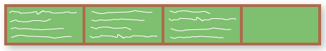
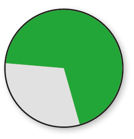
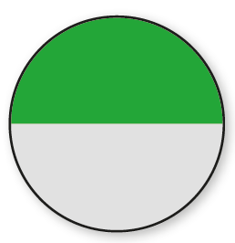
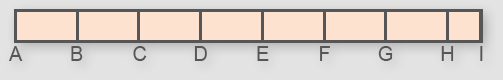

193
CAPÍTULO 3 - Porcentagem
Significado da expressão: por cento
Para a festa de fim de ano, a turma de Larissa ensaiou a peça infantil O Menino Maluquinho para apresentar aos demais colegas. No dia da apresentação, os alunos reuniram-se no teatro da escola para assistir à peça.

Nesse dia, assistiram à peça 100 crianças, das quais 60 eram meninas e, 40 eram meninos.
Representando, na forma de fração, a quantidade de meninas, temos:
Significa que havia 60 meninas entre as 100 crianças, ou ainda, podemos dizer que 60% das crianças eram meninas.
Representando, na forma de fração, a quantidade de meninos, temos:
Significa que havia 40 meninos entre as 100 crianças, ou seja, 40% das crianças eram meninos.
As frações que representam a quantidade de meninas e meninos em relação ao total podem ser representadas por uma porcentagem.
194
As porcentagens podem ser representadas na forma de frações cujo denominador é igual a 100.
Então:
= 60% → lemos sessenta por cento.
= 40% → lemos quarenta por cento.
ENCONTRE SOLUÇÕES
1. Em seu caderno, escreva cada situação a seguir na forma de porcentagem.
a) De cada 100 peças produzidas, 2 apresentaram defeito.
b) No ano passado, 17 de cada 100 vestibulandos não passaram da 1.ª fase do vestibular.
2. Para cada fração abaixo, encontre uma equivalente com o denominador 100. Depois, escreva em seu caderno, a porcentagem correspondente.
a)
b)
c)
d)
e)
3. De cada 50 reais gastos com alimentação, 12 reais são de impostos. Em seu caderno, registre a porcentagem destinada aos impostos.
4. (ENEM) Um professor dividiu a lousa da sala de aula em quatro partes iguais. Em seguida, preencheu 75% dela com conceitos e explicações, conforme mostra a figura seguinte:
► Algum tempo depois, o professor apagou a lousa por completo e, adotando um procedimento semelhante ao anterior, voltou a preenchê-la, mas, dessa vez, utilizando 40% do espaço dela. Uma representação possível para essa segunda situação é:
a)
b)

c)
d)
e)
195
Resolvendo problemas que envolvem porcentagem
Observe as situações a seguir.
Situação 1
Das 500 crianças que foram ao circo, 30% comeram pipoca durante o espetáculo. Quantas crianças comeram pipoca?

Reinaldo Rosa/Acervo da Editora
Precisamos saber quanto representa 30% de 500. Como 30% = vamos calcular de 500. Para simplificar o cálculo, inicialmente encontraremos a forma irredutível da fração , ou seja, =
Calculando de 500, temos:
. 500 = = 150
Logo, 150 crianças comeram pipoca.
196
Situação 2
Carla comprará uma calça que custa 80 reais. Sabendo que a loja está oferecendo 25% de desconto, qual o valor que Carla pagará pela calça?

Nesse caso, 80 reais representa 100% do preço. Com 25% de desconto, Carla pagará apenas 75% do valor da calça (100% − 25% = 75%).
Sendo assim, vamos calcular 75% de 80 reais. Simplificando a fração temos . Então:
. 80 = = 60
Com 25% de desconto, Carla pagará 60 reais pela calça.
Situação 3
Janaína esqueceu de pagar a fatura de uma conta. Ela ficou sabendo que a multa para o pagamento da fatura atrasada é de 2%. Qual o valor da multa e quanto será pago no total, sabendo que o valor da conta é de 300 reais?
Calculando o valor da multa: Como 2% = , temos:
O valor da conta com a multa:
300 + 6 = 306
O valor total será de 306 reais, já acrescido de 6 reais de multa.
197
ENCONTRE SOLUÇÕES
1. Em um restaurante, Isabela gastou 26 reais com a refeição e 4 reais com as bebidas. Qual o valor da conta, sabendo que, além desses gastos, ela deverá incluir 10% de gorjeta para o garçom?
2. O pai de Jonas, Henrique e Maria deixou de herança 20 mil reais. No testamento, o desejo do pai era de que 45% do total ficasse com Jonas; 32%, com Henrique; e o restante, com Maria. Com quantos reais cada um ficou?
3. Maristela recebe um salário de 1 200 reais por mês. No mês que vem, ela ganhará um aumento de 6%. Qual será o novo salário de Maristela?
4. Agora vamos usar uma calculadora para resolver problemas envolvendo porcentagem. Observe como utilizá-la em cada uma das situações.

a) Quanto é 20% de 120? Usando a calculadora:
► digite 120 e tecle ×;
► digite 20 e tecle %.
Qual o resultado que apareceu no visor? Compartilhe-o com seus colegas.
b) Aplicando um desconto de 30% sobre 150 reais, qual será o valor final? Usando a calculadora:
► digite 150 e tecle _;
► digite 30 e tecle %;
► tecle =.
Qual resultado você encontrou? Seus colegas encontraram o mesmo?
c) Com um acréscimo de 12% sobre 200 reais, qual será o valor final? Usando a calculadora:
► digite 200 e tecle +;
► digite 12 e tecle %;
► tecle =.
Qual foi o valor encontrado? Converse com seus colegas a respeito.
5. Agora, para a resolução das situações propostas a seguir, continue utilizando a calculadora. A cada resultado, converse com seu professor e com seus colegas.
a) Uma fatura no valor de 1 500 reais será paga com atraso, o que acarretará um acréscimo de 9% ao valor. Qual o valor total a ser pago?
b) Joaquim recebe 3 200 reais de salário bruto, porém, na folha de pagamento, aparece um desconto de 27% referente a impostos e encargos sociais. Qual é o salário líquido de Joaquim?
c) 18% de um terreno é constituído de gramado. Sabendo que esse terreno é retangular e tem 400 m² de área, qual é a área do gramado?
6. Observe os valores das roupas abaixo.

► Em seu caderno, elabore um problema envolvendo o conceito de porcentagem usando as imagens acima como referência. Em seguida, troque o seu caderno com um colega para que ele resolva o problema elaborado por você. Juntos, verifiquem se os problemas resolvidos estão corretos.
198
PROBABILIDADE E ESTATÍSTICA
► Interpretação de gráficos de setores
Água em casa
[...]
Boa parte da água distribuída para propósitos domésticos nunca chega ao consumidor, pois se perde nos vazamentos das tubulações. As cidades de países desenvolvidos costumam perder 40% de sua água nesses vazamentos. Parte dessa água volta aos depósitos subterrâneos, rios e lagos; mas a maior parte evapora.
[...]
CLARKE, Robin; KING, Jannet. O atlas da água.
São Paulo: Publifolha, 2005. p. 30-31.
O gráfico a seguir representa o consumo doméstico de água em um país industrializado.

Fonte: CLARKE, Robin; KING, Jannet. O atlas da água.
São Paulo: Publifolha, 2005. p. 30-31.

199
1. Troque ideias com um colega a respeito do que você leu no item anterior.

No caderno, respondam às questões a seguir.
a) Supondo que uma família tenha utilizado 15 000 litros de água em um mês, calculem, com base nas informações do gráfico, quantos litros foram gastos com limpeza, lavagem de roupa, descarga em vaso sanitário, cozinha, água de beber e higiene pessoal.
b) Realizem uma pesquisa sobre o consumo mensal de água de uma família que você conheça. Calcule quantos litros de água são utilizados com limpeza, lavagem de roupa, descarga em vaso sanitário, cozinha, água de beber e higiene pessoal.
c) Façam uma lista de atitudes simples que podem colaborar para evitar o desperdício de água em nosso dia a dia.
As informações sobre o uso da água foram representadas por meio de um gráfico denominado gráfico de setor. Esses gráficos mostram as relações parte-todo e podem ser usados para comparar relações. Neles, é muito comum o uso de porcentagens para indicar as relações parte-todo.
2. Uma revendedora de celulares fez um levantamento das funcionalidades que os usuários gostariam que viessem no aparelho. Veja:
Funcionalidade solicitada

a) A metade dos usuários solicitou qual funcionalidade no celular? Qual a forma percentual dessa quantidade?
b) De 800 usuários pesquisados, quantos solicitaram a função:
► câmera?
► mensagem?
► tv digital?
► conexão wi-fi?
c) Qual função apresenta maior frequência?
200
3. (Saresp) Dados da Associação Brasileira dos Exportadores de Cítricos mostram que 70% do suco de laranja exportado pelo Brasil é comprado pela União Europeia. Num dos gráficos abaixo, a parte verde indica o percentual referente às compras da União Europeia. Qual dos gráficos a seguir representa esta situação? Expliquem, no caderno, o porquê da escolha do gráfico.
a)

b)
c)
d)
4. (OBMEP) Os resultados de uma pesquisa das cores de cabelo de 1 200 pessoas são mostrados no gráfico abaixo.

► Quantas dessas pessoas possuem o cabelo loiro?
a) 60
b) 320
c) 360
d) 400
e) 840
201
RELEMBRE
1. O desenho abaixo representa uma estrada de 30 km. Alguns trechos dessa estrada deverão ser sinalizados com placas.
AB = BC = CD = DE = EF = FG = GH
HI = AB
► Sabendo que em A ficará a placa km 0 e em I a placa km 30, onde ficarão as placas km 12, km 16 e km 28?
2. Nos relógios, 15 minutos correspondem a que fração da hora?
3. (Saresp) Dois terços da população de um município correspondem a 36 000 habitantes. Pode-se afirmar que esse município tem:
a) 18 000 habitantes
b) 36 000 habitantes
c) 48 000 habitantes
d) 54 000 habitantes
4. Dois terços das despesas de uma empresa referem-se ao pagamento de funcionários. Sabendo que, no ano passado, ela gastou 18 mil reais com o pagamento de funcionários, calcule em seu caderno, qual foi o total de despesas dessa empresa.
5. (Saresp) Uma plantação foi feita de modo a ocupar da terça parte da área de um sítio, como mostra a figura. Em relação à área total do sítio, a fração que representa a área ocupada por essa plantação é:

a)
b)
c)
d)
6. O tanque de gasolina de um carro tem capacidade para 48 litros de combustível. Se o marcador está exatamente entre e , qual a quantidade de gasolina que falta para completar o tanque, em litros?

202
7. A tabela abaixo informa a capacidade máxima de dois teatros localizados em Salvador, capital da Bahia, e a fração de lugares ocupados no último espetáculo realizado em cada um.
Teatros da Bahia
Comparativo entre capacidade e ocupação

► Com base nas informações da tabela acima, analise as afirmações a seguir e copie a verdadeira no caderno.
a) Os dois teatros receberam a mesma quantidade de pessoas.
b) O Teatro Iceia apresentou menos lugares ocupados.
c) A peça no Teatro Iceia recebeu o dobro de público em relação ao Teatro Castro Alves.
d) O Teatro Iceia recebeu 4 pessoas a mais que o Teatro Castro Alves.
8. Colocando 1 litro de suco em uma jarra sobra de sua capacidade para ser completada. Quantos litros cabem em 2 jarras como essa?

9. Se a = 3 : e b = : 3, então podemos afirmar que:
a) a < b
b) a = b
c) b > a
d) a > b.
10. Em seu caderno, calcule o valor das expressões abaixo.
a) + 1 + ( - )
b) 1 - / + 3
11. (Saresp) Robson utilizou de 1 litro de tinta para pintar a sala de sua casa. Sabendo que o restante da casa equivale a 3 vezes a área pintada da sala, de quantos litros de tinta ele precisará para pintar os outros cômodos?
a) 2
b) 3
c)
d)
12. (UTFPR) Num aniversário, um bolo foi distribuído entre 5 crianças. João ganhou do bolo, Luiz ganhou a metade do que João ganhou, Maria ganhou do bolo, Joana ganhou o dobro de Maria e Jorge ganhou o restante do bolo. Então, pode-se afirmar que a fração do bolo dada a Jorge foi:
a)
b)
c)
d)
203
13. Leia a reportagem abaixo.
Brasil tem mais colégios estaduais do que privados com biblioteca, lousa digital e internet para aprendizagem
Há, proporcionalmente, mais colégios nas redes estaduais equipados com itens como biblioteca, lousa digital e internet para ensino do que na privada. A informação é do Censo Escolar 2019, publicado pelo Instituto Nacional de Estudos e Pesquisas Educacionais Anísio Teixeira (Inep).
Os dados são referentes apenas ao Ensino Fundamental. Nas escolas públicas comandadas pelos estados, 81% das unidades têm biblioteca ou sala de leitura. Na privada, são 80%.
[...]
► Em seu caderno, escreva os valores correspondentes às informações do texto em forma de fração e porcentagem.
a) Quantidade de escolas públicas que têm biblioteca ou sala de leitura.
b) Quantidade de escolas particulares que têm biblioteca ou sala de leitura.
14. Dos 15 000 habitantes de uma cidade, 57% são mulheres, das quais 48% têm menos de 18 anos. Qual o total de mulheres menores de 18 anos desta cidade?
15. Em determinado país, há 9 computadores para cada 100 habitantes. Isso quer dizer que:
a) 9% dos habitantes não têm computador.
b) 90% dos habitantes não têm computador.
c) 91% dos habitantes não têm computador.
d) 8,1% dos habitantes não têm computador.
16. Para fugir do sedentarismo, Marcos faz 60 minutos de atividades aeróbicas 3 vezes por semana, assim distribuídos: 15% destinados ao alongamento inicial; 10% ao aquecimento; 60% aos exercícios; e 15% ao alongamento final. Quantos minutos Marcos gasta em cada etapa?
17. Em uma caixa, há 30 bolas coloridas, sendo 8 azuis, 12 vermelhas e as demais verdes.
a) Qual é a fração que representa o número de bolas verdes em relação ao total de bolas existentes na caixa?
b) Qual é a fração que representa o número de bolas azuis e vermelhas em relação ao total?
18. De uma jarra com suco de uva, Marcos bebeu 1 copos, Júlia bebeu 2 copos e Júlio bebeu 3 copos, deixando a jarra completamente vazia. Cada copo comporta 200 mL de suco. Quantos mL de suco havia na jarra?